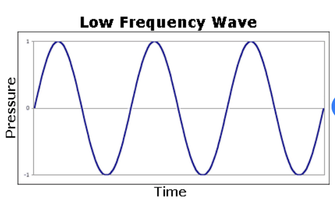
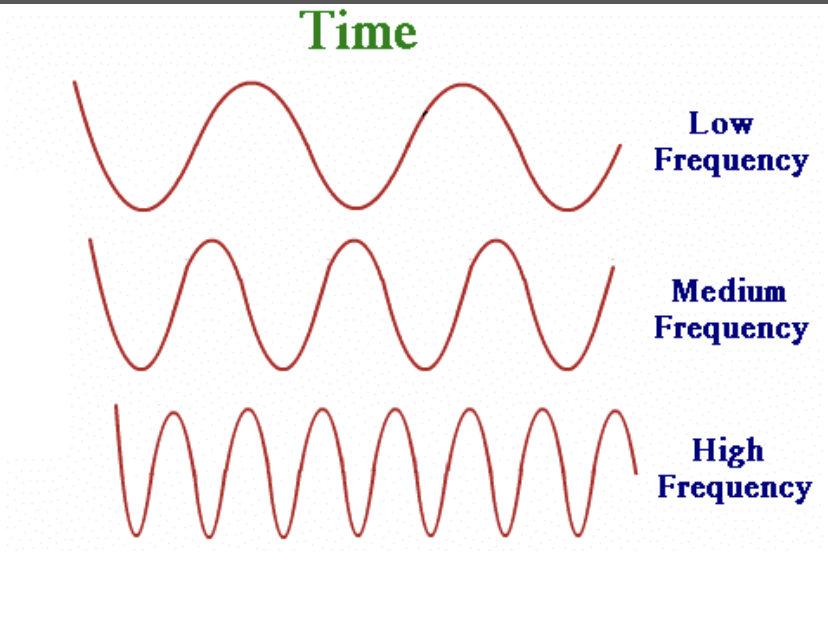

The rate at which a vibration occurs that constitutes a wave. It can be measured as the wavelength or the distance between each peak in the signal. Usually measured per second in Hertz(HZ). Frequency is also used to discover the pitch of a sound. A low pitch corresponds to a low frequency wave and a high frequency wave to a high pitch.
The measurement of frequency is in Hz. The higher the Hz the higher the frequency. For example, a sound that produces a wave of 500Hz has a lower frequency than a wave produced with 2000Hz. We show the difference in frequency on the graph with the distance between each peak or a term called bandwidth.
A low frequency wave will also have a shorter wavelength than a high frequency wave. In the first image you can see that with higher frequency the amount of peaks increases shortening the wavelength in between each peak. So a higher frequency signal will naturally have a short wavelength and a low frequency signal will have a long wavelength.
Usually measured in meters, amplitude is used in physics to describe the maximum or minimum displacement of a moved point from its resting position on the line. When waves are generated by signal, the amplitude will be directly proportional to its source. Think of the height of a Mountain. When measuring a mountain's height, you have to start from the center and measure a straight verticle line up and down. As shown in the figure below.
Here you can see the arrow shows the vertical displacement of the peak from its origin in this wave. The same way you would measure a mountain. That is Amplitude!
Because the amplitude of a wave is the amount of energy it caries, it is directly related to the intensity of the sound. The more intense the sound is the louder it is percieved. A singal produced by a louder sound will have a higher amplitude than that of a softer sound.
This occurs when there are mulitple waves that make up one signal. It can cause the amplitude to increase or decrease by however much the other signals amplitude was that is combined with said signal. Superpositioning is used in FFT's because reverting to the time domain from the frequency domain requires the multiple waves in a signal to combine back into one so that it can fit into the time domain with one wave.
In this example, you can see that Wave 1 and Wave 2 amplitudes are equal to 1x. They also have the same frequency and wavelength. So when they are combined, the new waves amplitude is equal to 2x
In the decreasing figure, we see that Wave 1 starts off with a positive amplitude. But in Wave 2 the amplitude starts out negative. Because the amplitude of Wave 1 is positive where the amplitude of Wave 2 is negative they cancel each other out. This forms the straight line that you see in the resultant that has no amplitude or an amplitdue equal to 0
Frequency and Amplitude Playground